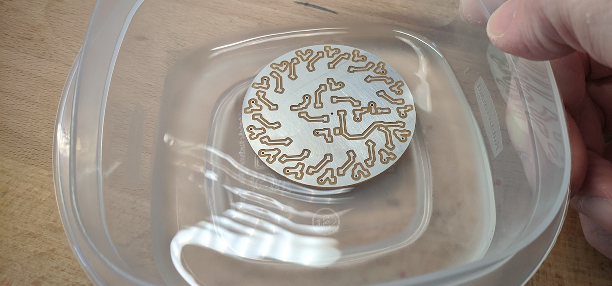

This guide describes how to add protective coating to your circuit, for protecting the copper against oxidation, and the entire finished PCB from environments.
Circuit boards are made of copper, and over time that copper will degrade, oxidize, and generally break down. To help prevent that, the steps described here will help your PCB stay in tact for longer.
First, we can protect the raw copper on your PCB by adding a thin layer of tin to it. This tin is conductive, so once you add it you can still treat your PCB like normal. Plus, it gives your board a cool silver look.
The materials you will need are your PCB, a bottle of liquid tin, and a plastic tupperware container (must be plastic).
Before starting, clean your PCB with isopropyl alcohol, to make sure any dirt and oil is removed (these will prevent the tin from attaching evenly across the PCB's surface).
Place your PCB in the container, and pour just enough liquid tin to cover it up. You don't want to pour too much, because then it is a waste of tin.
Keep the PCB in the tin for 3-5 minutes (or however long the bottle instructs you). While it is in there, move the liquid around with your hand, to make sure that all surfaces are equally hit by the tin.
When the time is up, do not pour the used tin down the sink. Instead, store the tin in a separate container or bottle (like a used water bottle), so that you can use it again in the future. You should be able to use the tin a few more times before it stops working. Once it does stop working, you will want to bring it to your local waste disposal drop-off location.
After removing the tin to a safe container, you can use a sink to rinse out the tupperware and clean off your PCB.
Your circuit board is now officially "tinned". You can clean it again with alcohol, and enjoy it's silervy coolness.
Sometimes you want to not only protect the copper, but also protect all the components, their pins, and the solder joints. This is especially true if you want to use your PCB outside in humid air, or keep it for a very long time.
This is where conformal coating can be used. This is a thin layer of transparent material, similar to acrylic, which is sprayed over the entire board to protect it. It comes in a spray can, like paint, and should be used in an open environment or a spray booth.
Before starting, decide if there are any parts of your PCB that you want to protect from the conformal coating. This conformal coating will cover everything, making things not conductive. If there are any sections that you need to still be conductive, simply cover them with some tape so they are not coated.
Follow the instructions on the conformal coating carefully. On my spray can, it instructs me to shake the can well, and spray horizontally from 6-8 inches away. Then, after applying the first coat, I rotate my PCB 90 degrees and apply a second coat.
After spraying, you'll need to wait at least 5 minutes before you can touch the PCB. It will be quite wet, so give it time to dry.
After 5 minutes, it should be dry enough to touch. However, it will need an additional 24 hours for it to completely solidify, so handle with care.
Not that it is done, the parts covered with the coating should be much better protected against humidity and oxidation. And the parts I covered with tape are still just as conductive as they were before. Great!
However, if you ever need to edit your board (like solder something or scrap something off), the conformal coating can simply be removed by scraping it or heating it with a soldering iron. It is not entirely permanent.